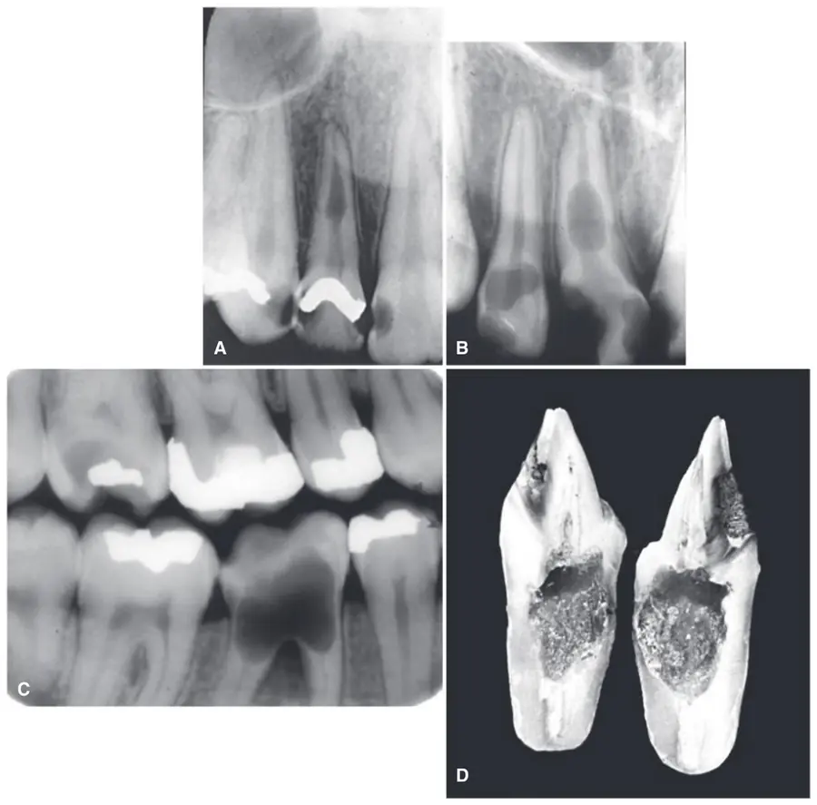

نسخه استخراجشده؛ ترجمه یا تأیید علمی انجام نشده است. وضعیت: captured
تا اینجا آنومالیهای تکاملی را دیدی. حالا دو بلوک باقیمانده — و بعد جمعبندی یونیت.

اتریشن = سایش فیزیولوژیک از تماس دندان با دندان. در بیش از ۹۰٪ بزرگسالان جوان و عموماً شدیدتر در مردان. روی تصویر: سطوح منحنی به سطوح تخت تبدیل میشوند، تاج کوتاه میشود، و عاج ثانویه اتاقک پالپ را تنگ یا محو میکند. اگر دندان لق باشد، فضای PDL هم پهن میشود.
ابریژن = سایش غیرفیزیولوژیک از تماس با مادهای بیگانه. شایعترین شکلش، سایش مسواک است: نقصهای رادیولوسنت در سطح سرویکال، با شکل نیمدایره یا هلالی و حاشیهای که بهتدریج اوپکتر میشود، شدیدتر در CEJ سطوح وستیبولار و لبیال پرمولر، کانین و انسیزور ماگزیلا به همین ترتیب. و سایش نخ دندان شکل دیگری است: شیار هلالی باریک در سطح پروگزیمال سرویکال.
اروژن = از دست رفتن ساختار با عمل شیمیایی بدون دخالت باکتری. و یک قاعدهی مکانی بسیار کاربردی: اسید برگشتی از معده، سطوح لینگوال و پالاتال را دمینرالیزه میکند؛ اسید رژیم غذایی، سطوح لبیال را. در بولیمیا، اروژن ۱۰ برابر محتملتر است. ضایعات صاف و براقاند و لبههایشان گردتر از ابریژن.
و مهمترین افتراق کل این بلوک — تحلیل داخلی در برابر خارجی:
و آزمون قطعی افتراق این دو: زاویهی افقی پرتو را عوض کن. تصویر تحلیل خارجی نسبت به اتاقک پالپ جابهجا میشود، ولی تصویر تحلیل داخلی به کانال چسبیده میماند. و پوسیدگی باکال یا لینگوال — سومین شبیه — حاشیهی منتشرتر دارد و در بالین دیده میشود.
و سه کلسیفیکاسیون پالپ: عاج ثانویه (کاهش اندازهی پالپ با حفظ شکل)، پالپ استون (تودهی گرد تا بیضی که فضایی از پالپ را اشغال میکند؛ تنها ۱۵ تا ۲۵٪ کلسیفیکاسیونهای پالپ آنقدر بزرگاند که دیده شوند)، اسکلروز پالپ (فرایندی منتشر؛ در ۹۰٪ دندانهای افراد ۵۰ تا ۷۰ ساله از نظر بافتشناسی حاضر است ولی مرحلهی زودرسش روی تصویر دیده نمیشود).
و هایپرسمانتوز: رسوب بیش از حد سمنتوم، بیشتر در یکسوم آپیکالی. کلید تشخیصش این است: لامینا دورا و فضای PDL، ریشهی بزرگشده را در بر میگیرند — یعنی مرزها دنبال ریشه میروند. علل: نامعلوم، سوپرارپشن پس از از دست رفتن دندان مقابل، پاسخ به التهاب، هایپراکلوژن، شکستگی، بیماری پاژه و هایپرپیتویتاریسم.
شکاف لب و کام — شایعترین آنومالی تکاملی کرانیوفاسیال جهان؛ شیوع جهانی همهی شکافهای دهانی-صورتی ۰٫۴۵ در هر ۱۰۰۰ تولد زنده. و دو موجودیت با منشأ جنینی متفاوت: CL/P از نرسیدن زائدهی نازال میانی به زائدهی ماگزیلاری، و CP از نرسیدن شلفهای کام جانبی به هم.
و یک تفاوت جنسیتی که پرسیده میشود: CL/P در مردان شایعتر است و CP در زنان. هر دو در جمعیتهای آسیای شرقی و بومی آمریکا شایعترند. خفیفترین شکل CP، شکاف زیرمخاطی با یوولای دوشاخه است. و از ژنها، IRF6 (سندرم فان در وود) و حذف ۲۲q11 (سندرم ولوکاردیوفاسیال) نام برده میشوند.
روی تصویر: نقص رادیولوسنت عمودی و واضح در زائدهی آلوئولار، معمولاً ناحیهی لترال ماگزیلا، همراه با دندانهای غایب، هیپوپلاستیک و اضافه در همان ناحیه. و در شکاف ترمیمشده، بهجای نقص واضح، زائدهی آلوئولار کوتاه در ارتفاع دیده میشود.
و چهار سندرم که باید بشناسی — هرکدام با یک امضا:
و یک نکتهی بالینی که مستقیماً به تصویر گره میخورد: در دیسپلازی کلیدوکرانیال، کشیدن دندان شیری، رویش دندان دائمی زیرین را بهقدر کافی تحریک نمیکند — چون علت، غیاب سمنتوم سلولار و استخوان آلوئولار متراکمتر با ترابکولاسیون درشت است، نه صرفاً انسداد مکانیکی.
سؤالهای این مرور سختترند و بسیاری از آنها یک مانور میخواهند — تغییر زاویه، تصویر دوم، یا آزمون بالینی — نه فقط نام یک بیماری.
نوع سؤال: ساخت کلمه · 6 خانه
حروف منبع: ی · م · ل · ر · و · ب